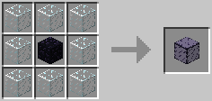
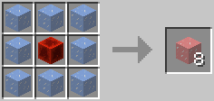

Introducing:
A mod that adds more basic building blocks to minecraft. Why aren't there enough basic mods like this anymore? or am I looking in the wrong places?
Features
- Vertical bricks
- Metal bricks
- Obsidian bricks and obsidan reinforced glass, blast resistant
- Non-melting redstone infused ice that makes you walk and run faster
Recipes
Obsidian Reinforced Glass
Redstone Infused Ice
Bricks
Vertical brick blocks can be crafted by placing two brick blocks vertically in a crafting table. You can make them normal or "horizontal" again by placing two of them horizontally.
Metal brick blocks are created with a 2x2 grid of metal blocks and can be crafted back into metal blocks the same way.
Downloads
I expect you to know how to install mods. Just drag the jar file into your mods folder.
- Version 1.0 for Minecraft 1.7.10 Forge
- 1.14.4 version never